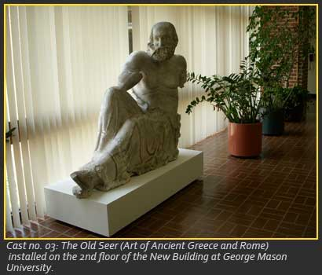
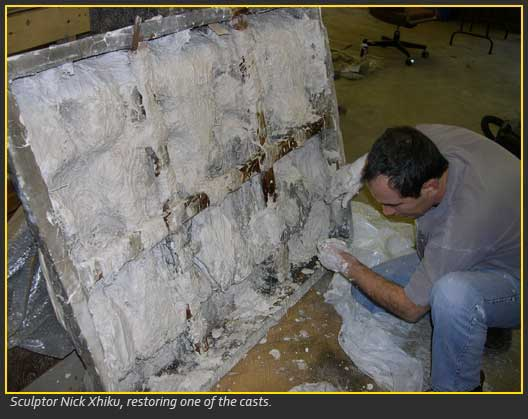
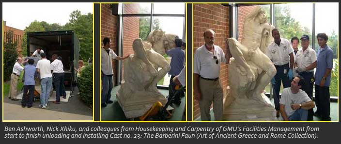

Plaster Casts at GMU
Today there is renewed interest in plaster casts, and, as a result, many casts are emerging from their dusty storage spaces and are being displayed once again in museums and teaching institutions. In the 1980s, the Metropolitan Museum began to lend its casts to colleges and universities across the United States. After 2000, the Museum gave many more casts to academic institutions. Finally, in 2006 the Museum sold the rest of the casts at auction (see below, Lucy R. Miller, "The Last Casts: Neophytes with Good 'Chi'").

George Mason University is the fortunate recipient of approximately seventy plaster casts from the Metropolitan Museum of Art, the first of which arrived in 2003 on long-term loan, followed by two more shipments - of gifts - in 2005. Many of them had been stored in a warehouse in the Bronx, where they were first seen by Tom Ashcraft and Carol Mattusch, later by Ben Ashworth, Lucy Miller, and Anna Zacherl
"Thinking of new ways to display and support the work can be difficult at times, and require some planning. This can be due to the weight or shape of the piece. For inspiration on new support techniques I visited the National Gallery in Washington DC and also the Metropolitan Museum in New York City. …I would make mental notes and some small sketches of their supports, and apply my new knowledge to the works that we were going to hang."- Joseph PettyThose casts that had been broken were pieced together by students and repaired by Nick Xhiku, a sculptor skilled in the arts of making and restoring plasters.Once he made a new toe (no. 23), once a horn (no. 34). He also made mounts for installation and helped to move many of the heavy and delicate casts, as did Ben Ashworth. Nick once led students in a discussion that ended in a decision not to fill and thereby conceal a hole that had evidently been made by years of dripping water (no. 33).

In 2004, Andrew Zimmerman photographed the first casts that arrived at George Mason during their restoration in the then unused back kitchen area on the second floor of SUB II, now re-named The Hub . Later shipments of casts were restored in a warehouse-sized storage barn in Clifton, whose use was generously offered by Mason student LeAnn Brickey.
Students, faculty, and staff have all had roles in deciding where to install the plaster casts. Moving and installation of each large cast was accomplished with the help of Ben Ashworth, Nick Xhiku, and colleagues from Housekeeping and Carpentry of GMU's Facilities Management. Glass exhibition cases that now hold many of the smaller casts were donated to the Department of History and Art History by Dr. Jerome J. Eisenberg. Labels identifying the castswere produced by GMU's Sign Shop.
"There can be many people to go through to get it all to work, but in the end it can all be worth it…I think that having a supporting group of people behind the project makes the work go smoother and faster."- Joseph Petty
See Sheila Dillon, Ancient Greek Portrait Sculpture: Contexts, Subjects, and Styles (Cambridge, 2006); The Encyclopedia of Sculpture, ed. Antonia Bostrom (New York, 2004); Edna R. Russmann, Eternal Egypt: Masterworks of the Ancient Art from the British Museum (Berkeley, 2001); Alan Wallach, "The American Cast Museum: An Episode in the History of the Institutional Definition of Art," Exhibiting Contradiction: Essays on the Art Museum in the United States (Amherst, 1998), 38-56; Fragments of Chicago's Past, ed. Pauline Saliga (Chicago, 1990); Helen W. Henderson, The Pennsylvania Academy of the Fine Arts and Other Collections of Philadelphia (Boston, 1911); The Metropolitan Museum of Art, Catalogue of the Collection of Casts (New York, 1908).
For other collections of plaster casts, see the International Organization for the Conservation and the Promotion of Plaster Cast Collections - www.plastercastcollection.org.
- Contributors to this essay: Danielle Cook, Lisa Hargrove, Lucy Miller, Helen Watson Obiechina, Kristin L. Ware.